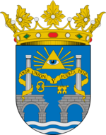

El Bierzo
 De: La Frikipedia, la enciclopedia extremadamente seria.
De: La Frikipedia, la enciclopedia extremadamente seria.
| De la serie pueblos del mundo:
|
| El Bierzo
|

|

|
| (Bandera)
|
(Escudo de armas)
|
|
| Topónimo oficial
|
Montagnes
|
| País
|
IV Reich Galaico
|
| Código postal
|
Usan telepatía
|
| Superficie
|
Un sistema montañoso entero
|
| Altitud
|
10.000 km sobre las Médulas
|
| Distancia
|
Al lado de Dios
|
| Fundación
|
51 d.C.
|
| Población
|
Masones, peperos, etc.
|
| Gentilicio
|
Suevos y vikingos
|
| Alcalde
|
Tarja Turunen
|
El Bierzo es una comarca situada al oeste de Cazurrolandia (anteriormente conocida como Mordor), al este de las tierras de Fraga, Galicia, y al sur del país de las fabes.
Datos de interés
Está caracterizada por estar rodeada de montañas, aislada del resto de civilización y tener un clima frío y húmedo en las montañas y más suave en la zona centro, aunque a la gente se la sople el que haya frío o calor. Aunque últimamente la gente se ha dado cuenta de que con el calor las mujeres van más ligeras de ropa por lo que gusta más el calor, aunque de eso haya poco en buena parte del Bierzo excepto Ponferrada que tiene un maravilloso clima. En Ponferrada nunca se puede decir que haya frío o calor, o te congelas con la niebla en invierno, o mueres asado de calor en verano.
Su paisaje es muy variable, desde montañas con forma de pene a valles que parecen lo contrario, de verdes paisajes a zonas más ocres. Podemos destacar majestuosos y numerosos castaños y encinas por toda la comarca. Sin olvidarnos de las preciosas e inigualables Médulas, antiguas minas auríferas que los romanos explotaron hace mogollón de años... se llevaron el oro ¡y sólo dejaron carbón!
El Bierzo tiene tres capitales: Bembibre (ciudad llena de negros), Villafranca del Bierzo (llena de gitanos) y Ponferrada (llena de gallegos).
Ríos y montañas
Otra cosa no habrá en El Bierzo, pero esto es lo que sobra, la verdad. Hay montañas de diferentes formas y tamaños y colores: negras, verdes, rocosas, de formas puntiagudas y alguna que, mayormente, parece un pene (menos mal que no eyacula)
El pico más alto es el querido pico Catoute, 2117 metros, aunque nadie los ha contado.
Ríos destacan dos, el Boeza que baja por el frondoso valle del Boeza y el Sil por el escarpado cañón del Sil, lugar idóneo para matar a tu suegra y tirarla al pantano.
Los bercianos tienen la fijada creencia de que siendo Ponferrada como es el centro del mundo, el río Sil es también el río mas importante del universo y parte del extranjero, llegando a niveles de promesas electorales para canalizarlo y hacerlo navegable, terminando así de transformar esta ciudad en Nueva Londres del Sur, junto con las torres, el puente y la torre del reloj.
En el Bierzo también está el famoso pueblo de Quilós, conocido por sus fiestas y sus hazañas, aunque lo más importante es la gente que en él habita. No suelen ser gente mala pero sí rara, te puedes encontrar con ciertos individuos que no son los mas idóneos para pasar el rato. Este pueblo ha resistido a numerosas batallas como las de la guerra de globos, las carreras de burros y algún que otro partido de fútbol, lo cual nos llevó al retiro del equipo oficial, el C.D. Quilós.
Cultura, gastronomía y trabajo
- Como no, los bercianos, con su buen hacer, les encanta llenar el zambullo (barriga). En eso se basa su cultura, en comer botillo hasta reventar y llenarse de un buen vino, por supuesto siempre vino de El Bierzo, por este motivo cada sábado del verano, el 100% de la población de Ponferrada se desplaza misteriosamente y en masa a Molinaseca y vuelve claramente ebria.
- Como no, otra afición de los bercianos es la de echar un buen polvo después de comer, para que asiente mejor el botillo. Además es muy sana.
- Otros aún creen conveniente prender fuego al monte porque les recuerda a las escombreras de carbón, muy frecuentes por el Bierzo Alto y dicen que así se ahorra dinero en calefacción. Lo curioso es que los incendios son en verano.
- La cultura de estar en el pincho (aunque esté en declive por el Digital + y La Sexta).
- La pesca y la caza también son grandes aficiones de los bercianos, aunque lo que cacen no sea muy legal...
- Ir a picar carbón a la mina, que además broncea, aunque esta forma de trabajo esté en declive.
- Otra afición de los bercianos es la de plantar chopos y pinos para después quemarlos como los hamijos gallegos, sustituyendo en el Bierzo los eucaliptos por chopos.
- Vendimiar.
- Traficar con droja
- En algunas zonas como Molinaseca, es tradición matar y comer peregrinos en las épocas en las que el pueblo sufre una invasión y acoso de esta gente, acabando con la paciencia de los habitantes del pueblo. Esto disminuye su número hasta la siguiente oleada.
Vocabulario
Típicos gobernantes del Bierzo
- El berciano no se enamora: se queda pillao.
- El berciano no saluda: dice qué pasa tío!!!
- El berciano no trata de convencerte: Te ralla!!
- El berciano no concierta una cita con sus amistades: queda con los matao's de los colegas.
- El berciano no es valiente: Tiene webos!!
- El berciano no se va de tapas: Se va de cortos.
- Un berciano no va al Carrefour: va a continente.
- Un berciano no te da la espalda: te manda a tomar por culo!
- Un berciano no te llama la atención: me cagüen la puta q has hecho...?
- El berciano no es que no entienda: es que no lo pilla.
- El berciano no molesta: da el coñazo.
- El berciano no bebe copas: bebe cubatas a dolor.
- El berciano no se alimenta: se ceba a base de botillo.
- El berciano no te golpea: te suelta una ostia.
- El berciano no trabaja: curra.
- El berciano no hace botellón: Se sienta donde le sale y bebe.
- El berciano no se impresiona: se flipa en colores.
- El berciano no tiene ganas de hacer pis: mea.
- El berciano no tiene envidia: dice, que hijo de puta...
- El berciano no corre a toda velocidad: sale to follao'.
- El berciano no se dispersa del lugar: se pira.
- El berciano no fuma porros: (ostia que no...).
- El berciano no se ríe a carcajadas: se parte el culo.
- El berciano no te pide que lo lleven: pide que lo acerquen.
- El berciano no hace algo mal: la caga.
- El berciano no dice me voy: dice, marcho.
- El berciano no falta a clase: se las pira.
- El berciano no habla claro: te lo dice todo a la puta cara.
- El berciano no esta cansado: esta reventao.
- El berciano nunca se le derrama la copa: se le arrama el cubata.
- El berciano no tiene estrés: esta quemao.
- El berciano no ve a una chica fea: ve a un cayo malayo.
- El berciano no se enfada: se putea.
- El berciano cuando ve a un bombón no se queda callado: le dice, cuerpoooo, te metía de todo menos miedo.
- En El Bierzo no hay cerdos: hay gochos, en el monte y en las cuadras.
- El berciano no tiene grito de guerra: Somos del Bierzo mecagüen dios, somos del Bierzo!!!!
¿Sabías qué....
- ...el Bierzo es habitado por bercianos y berzotas.
- ...el Bierzo era independiente pero dejó de serlo porque le daba pena que Aspaña no tuviera un pueblo como Quilós?
- ...las mujeres bercianas si tienen un mal día, los hombres pueden sufrir su ira y salir volando a Cazurrolandia?
- ...las madres bercianas no dejan de acompañar a sus hijos a clase hasta que acaban la universidad?
- ...el Bierzo está lleno de cruces por la cantidad de ostias que se cruzan al cabo de un día (mas de un millón)?
- ...en el Bierzo los homosexuales no se llaman gays, se llaman mariconaaaaatevoyarajarelpene?
- ...en el 2036 la Ponferradina ganará el triplete y la Cultural desaparecerá por una inducción ovni?
- ...el año que viene los habitantes de Cacabelos invadirán Marte?
- ...dentro de dos años los cacabelenses querrán volver a la Tierra y no podrán por culpa de los villafranquinos?
- ...Quilós es un pueblo que vino al Bierzo en el año 1000 a.C procedente de otra dimensión?
- ...a los bercianos por la espalda cuanto menos mejor?
- ...si eres un turista inglés no debes intentar que los bercianos hablen inglés, ya que es más posible que un perro hable?
- ...si en el Bierzo hay cinco grados de temperatura, los auténticos bercianos se van a bañar al río en pelotas, dada la caló acumulada en la anósfera berciana?
- ...no debes ir al Bierzo con menos de 100 € ya que a los ladrones de allí les ofendería, y eso está muy mal visto?
- ...en los pueblos del Bierzo Alto como Matarrosa son fans incondicionales nuestros?
- ...un berciano con 1,60 de estatura se considera alto?
- ...una berciana de pura cepa cree tener las tetas pequeñas con una 120 de talla?
- ...en el Bierzo hay droja hasta en el ojete de la pasma?
- ...en el Bierzo los perros hablan una mezcla entre gallego y asturiano?
- ...no sólo los perros hablan ese dialecto, también las perras?
- ...4 de cada 3 bercianos tiene una escopeta en casa?
- ...1 de cada 2 cazadores bercianos dispara desde el coche?
- ...Luis del Olmo actuó en una peli-documental porno llamada "Penetramos en los olmos del Bierzo"?
- ...Elsa Pataky es de Fabero?
- ...en Ponferrada hay mas graffiteros que baldosas?
- ...en Bembibre no hay graffiteros porque sus calles no tienen baldosas, son de tierra?
- ...según una encuesta del Cis el 99% de mujeres Cacabelenses no usa bragas?
- ...Miss Bierzo 2009 tiene 72 años y fue a desfilar con la cacha y el azadón?
- ...en verano el Bierzo se llena de guiris y hacen su aparición los guiri-aprovechados que aprovechan las borracheras de los guiris para zumbárselos y ligar al menos una vez al año?
Infraestructuras
El Bierzo goza de una avanzada red de carreteras y ferrocarriles.
ZP había prometido el AVE para el Bierzo pero dijo que no pegaba por estas tierras y era mejor conservar el tren de vapor que contamina menos y funciona a carbón (materia prima que abunda en la comarca). También de esta manera se conservan las vías férreas que disponen de abundante vegetación en sus raíles, fruto del gran mantenimiento de RENFE en la comarca.
La autovía A6
Gracias al señor del Bigote, Ansar, disfrutamos de autovía por el Bierzo, que incorpora unos extras muy entretenidos, agujeros en el asfalto, para que cuando te aburras conduciendo los puedas esquivar.
Torre de la Rosaleda
Bueno habrá que esperar a que se termine y no se caiga antes.
El nuevo centro comercial
Desde octubre de 2007 los bercianos cuentan con un moderno centro comercial que ya estaba roto antes de inaugurarlo, lo cual es una gran idea, ya que así se ahorra a los bercianos el tener que romperlo de la que compran.
Investigación y desarrollo
En El Bierzo se investiga diariamente cómo comer botillo sin engordar tanto y como quemar carbón sin contaminar, aunque los fondos son mayormente usados para rascarse los huevos en la ciudad de la energía.
Economía
Basada en la explotación del carbón, en la construcción de molinos eólicos para llenar el monte de ellos, la importación/exportación de chopos y pinos.
Importaciones
- Droja (mucha)
- Inmigrantes
- Mataos pa la ponfe
Exportaciones
Autor(es):
- Krusher
- Doctor grijander
- Aque
- Viento
- Khazike Khashondo
- Spect
- IGORINHO
- AlemanH
- Titvs
- Raulitoponfe7
Frikipedia 2005-2016, Licencia
GFDL 1.2 - Extraído por FrikiLeaks